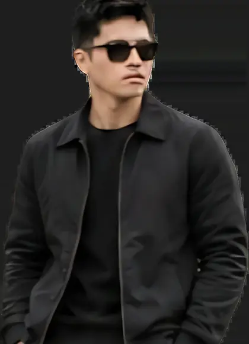

Páginas web
Que te encuentren en Google y te escriban, sin depender solo de las redes sociales.
Web con catálogo y pedidos por WhatsAppConecto tus herramientas, automatizo tus procesos y pongo la inteligencia artificial a trabajar para ti. Tú te enfocas en crecer.
Para vender más, responder mejor y dejar de hacer a mano lo que puede hacerse solo.
Que te encuentren en Google y te escriban, sin depender solo de las redes sociales.
Web con catálogo y pedidos por WhatsAppUn asistente que responde y hace tareas por ti, con la información real de tu negocio.
Chatbot que responde en WhatsApp 24/7Deja de copiar y pegar datos entre hojas, correos y sistemas.
Reporte de ventas cada lunesTus herramientas hablándose entre sí, la información en un solo lugar.
Formulario web conectado a tu CRMDecide con números claros en una pantalla, no con hojas sueltas.
Ventas, gastos y stock al díaResponde rápido a cada cliente, también fuera de horario, sin sumar más personal.
Sin precios fijos: te envío una cotización según lo que necesitas. Cotización sin compromiso
Y cuando tú cierras, sigue atendiendo.

Me cuentas cómo trabajas hoy y vemos juntos qué se puede hacer solo. Sin compromiso.
Agendar llamada